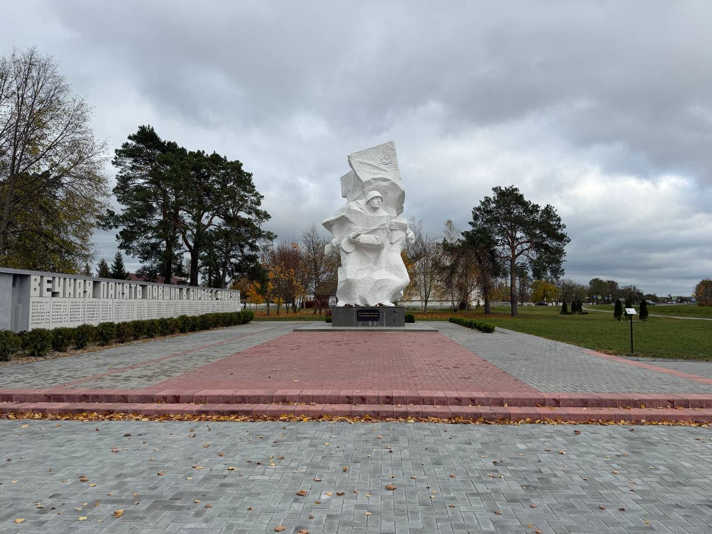

01Школьный музей
Экспозиции, документы и предметы повседневной жизни.
Зайдите в школьный музей, рассмотрите памятники и послушайте рассказы юных экскурсоводов.
Можно начать с любой прогулки.
Экспозиции, документы и предметы повседневной жизни.

Памятник на территории школы и мемориальная доска.

Память о земляках, погибших в годы Великой Отечественной войны.
Спросите об истории места. Экскурсовод найдёт сведения в видеорассказе и покажет источник ответа.